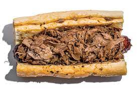

Chicago Subs

Childhood Memories
When I was a kid living outside of Chacago my Daddy use to bring these home everytime he would pass by Wolrd Famouse FRANKS!!
After we moved to Texas Daddy found this recipe to make us feel like we were at home!
Ingredients
- Beef chuck roast
- Bell peppers
- Jar banana peppers
- Beef Ajue Mix
- Onion soup packet
- Fresh italian hoagies
Steps
- Combine first 6 ingredients in a medium bowl, stirring with a whisk.
- Heat a large Dutch oven over medium-high heat. Add 1 tablespoon oil; swirl to coat. Add beef to pan; cook 10 minutes, turning to brown on all sides. Add stock mixture, 1 cup water, and 1/2 teaspoon salt to pan; bring to a boil. Reduce heat to medium-low; cover and simmer 90 minutes. Turn beef; cover and simmer 90 minutes or until beef is very tender. Remove pan from heat; keep warm.
- Heat a large nonstick skillet over medium-high heat. Add remaining 1 tablespoon oil; swirl to coat. Add garlic and bell peppers to pan; sauté 7 minutes or until tender. Add remaining 1/2 teaspoon salt, vinegar, and pepperoncini peppers to pan; cook 1 minute.
- Place beef on a cutting board; let stand 5 minutes. Cut across the grain into thin slices. Return beef to Dutch oven. Top bottom halves of rolls with half of beef cooking liquid. Top evenly with beef, bell pepper mixture, remaining half of beef cooking liquid, and top halves of rolls.
Recipe provided by
Chiacago Subs